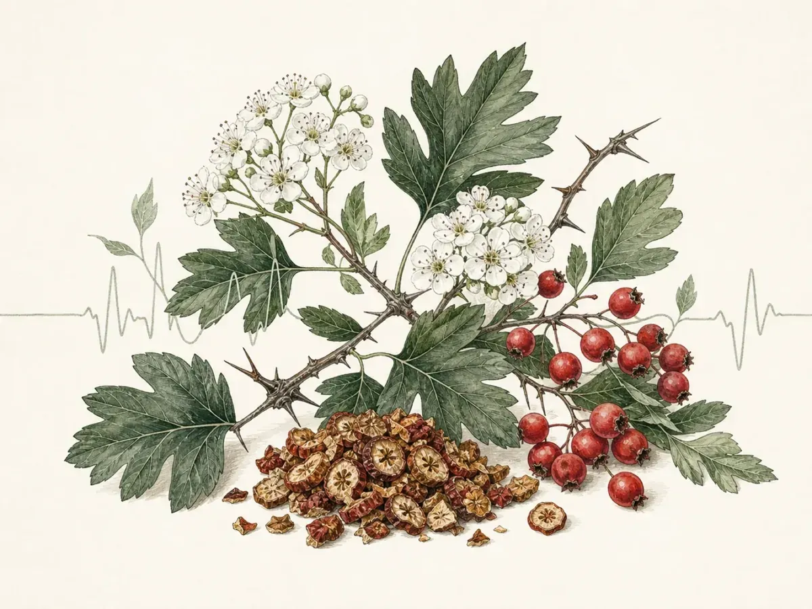

Čaj za pritisak: glog, hibiskus i druge biljke – šta kažu dokazi
Koji čaj za pritisak ima najviše dokaza (hibiskus, glog, imela, kantarion), koliko realno može da spusti pritisak, zašto ne zamenjuje lek i šta da pazite uz terapiju.
Autor: Redakcija sajta Moja Zdravica Objavljeno: 24.11.2026 Ažurirano: 24.11.2026
Čaj za pritisak ne može da zameni lek. Najviše istraživanja ima hibiskus, koji u studijama spušta gornji pritisak za oko 6–7 mmHg, ali su dokazi nesigurni. Glog, imela i valerijana se tradicionalno koriste za srce i smirenje, ali EMA ih ne navodi za visok pritisak.
Tekst je informativnog karaktera i ne zamenjuje savet lekara ili farmaceuta. Ne prekidajte i ne menjajte terapiju za pritisak bez lekara.

Visok pritisak je čest i često bez simptoma. Prema Svetskoj zdravstvenoj organizaciji (SZO), u svetu ga ima oko 1,4 milijarde odraslih između 30 i 79 godina, a skoro polovina njih to ne zna. Zato je logično da ljudi traže i prirodne načine da ga spuste. Ispod je pregled biljaka koje se najčešće nalaze u čajevima za pritisak i šta za njih kažu dokazi.
Koji čaj je najbolji za pritisak
| Biljka | Šta kažu dokazi | Na šta paziti |
|---|---|---|
| Hibiskus (Hibiscus sabdariffa) | najviše studija; blago snižava pritisak, ali su dokazi nesigurni | može da pojača dejstvo lekova za pritisak |
| Glog, list i cvet (Crataegus) | EMA: lupanje srca zbog nervoze, blagi stres i san; ne za pritisak | samo za odrasle; prvo pregled kod lekara |
| Bela imela (Viscum album) | narodna upotreba; nema pouzdanih studija za pritisak | bobice su otrovne; ne koristiti bez saveta |
| Valerijana (Valeriana officinalis) | tradicionalno za smirenje i san | može da izazove pospanost |
| Kantarion (Hypericum perforatum) | nema dokaza za pritisak | smanjuje dejstvo mnogih lekova |
| Zeleni i crni čaj | mali efekti u nekim studijama | sadrže kofein |
Hibiskus čaj za pritisak
Hibiskus je crveni, kiselkast čaj od čašica cveta. To je biljka sa najviše istraživanja na ovu temu. Pregled iz 2021. godine obuhvatio je 13 studija sa 1.205 ljudi sa blagim do umerenim visokim pritiskom. Uz hibiskus je gornji (sistolni) pritisak bio niži za oko 6,7 mmHg, a donji (dijastolni) za oko 4,4 mmHg, u poređenju sa placebom.
Cochrane pregled iz 2021. godine je strožiji. U njega je ušla samo jedna studija koja je zadovoljila sve kriterijume, sa 60 učesnika, a pouzdanost dokaza ocenjena je kao vrlo niska. Zaključak: hibiskus možda blago pomaže, ali to nije dokazano dovoljno da bi zamenio terapiju.
Glogov čaj za pritisak
Glog je najpoznatija biljka „za srce“ kod nas. EMA za list i cvet gloga navodi tradicionalnu upotrebu kod privremenih srčanih tegoba zbog nervoze, kao što je lupanje srca, i to tek pošto lekar isključi ozbiljne uzroke. Navodi ga i kod blagog stresa i za lakši san. Visok pritisak se u toj oceni ne pominje. Ako tegobe traju duže od dve nedelje ili se pogoršaju, potreban je lekar.
Da li čaj za visok pritisak može da zameni lek?
Ne. Lekovi za pritisak smanjuju rizik od moždanog udara, infarkta i bolesti bubrega, a za čajeve to nije pokazano. SZO navodi da je visok pritisak jedan od glavnih uzroka prerane smrti u svetu i da se uspešno kontroliše jednostavnim i jeftinim lekovima.
Čaj ima smisla kao dodatak, uz ove uslove:
- Ne prekidajte terapiju. Ni kad vam se pritisak „sredi“, jer se sredio upravo zbog leka.
- Merite pritisak kod kuće, ujutru i uveče, prve dve nedelje posle uvođenja čaja. Zbir čaja i leka može previše da ga spusti, uz vrtoglavicu i slabost.
- Recite lekaru šta pijete, uključujući i biljne čajeve.
- Pazite na interakcije. Prema američkom NCCIH-u, kantarion ubrzava razgradnju mnogih lekova i smanjuje njihovo dejstvo. Koncentrovani ekstrakti zelenog čaja mogu da smanje nivo nekih lekova, među njima i beta-blokatora nadolola.
Šta najviše spušta pritisak bez lekova
Promene u načinu života imaju veći efekat od bilo kog čaja i preporučuje ih i SZO:
- Manje soli. Najveći deo soli obično dolazi iz hleba, suhomesnatog, sireva i gotove hrane, a ne iz soljenke.
- Više povrća, voća i mahunarki.
- Redovna fizička aktivnost, na primer brzo hodanje 30 minuta većinu dana u nedelji.
- Smanjenje telesne težine, ako je povećana.
- Manje alkohola i bez pušenja.
Ove navike pomažu i onima koji već piju lekove, a nekima omoguće da im lekar smanji dozu.
Gotove mešavine za pritisak
U katalogu imamo dve biljne mešavine iz ove oblasti:
- Hypertea, rinfuz čaj od lista i cveta gloga (30%), hajdučke trave, lista bele imele, korena valerijane, lista breze i šipka. Prema onome što smo gore naveli, to je mešavina za smirenje i srčane tegobe zbog nervoze, a ne zamena za lek.
- Hyper Drops, tečni ekstrakt lista sremuša (divljeg belog luka). Sadrži alkohol, pa nije za one koji ga ne smeju unositi.
Ostale proizvode za ovu oblast nađite u kategoriji srce i pritisak. Pre nego što izaberete bilo koju mešavinu, proverite tačan sastav, upozorenja i proizvođača na deklaraciji.
Kome čaj za pritisak nije namenjen
- Trudnice i dojilje. Visok pritisak u trudnoći uvek prati lekar.
- Deca i mladi, ako lekar ne kaže drugačije.
- Osobe sa niskim pritiskom ili čestim vrtoglavicama.
- Osobe koje piju više lekova, bez prethodnog razgovora sa lekarom ili farmaceutom.
Kada hitno lekaru
Pozovite hitnu pomoć (194) ako je pritisak vrlo visok, na primer 180/120 ili više, uz bol u grudima, otežano disanje, jaku glavobolju, zamućen vid, slabost ili utrnulost jedne strane tela ili otežan govor. To mogu biti znaci hipertenzivne krize ili moždanog udara, i tu nema mesta za čaj.
Javite se izabranom lekaru i ako vam je pritisak više puta 140/90 ili viši, čak i bez ikakvih tegoba.
Informativni sadržaj. Nije zamena za savet lekara. Ako imate simptome, obratite se lekaru ili farmaceutu.
Česta pitanja
Koji je najbolji čaj za pritisak?
Najviše istraživanja ima čaj od hibiskusa. U pregledu 13 studija sistolni pritisak je bio niži za oko 6–7 mmHg nego uz placebo, ali Cochrane dokaze ocenjuje kao vrlo nesigurne. Nijedan čaj ne zamenjuje lek za pritisak.
Da li glogov čaj snižava pritisak?
EMA glog ne navodi za visok pritisak. Tradicionalno se koristi kod lupanja srca zbog nervoze, tek pošto lekar isključi ozbiljne uzroke, i kod blagog stresa i nesanice.
Mogu li da pijem čaj za pritisak uz lekove?
Uglavnom da, ali uz oprez i savet lekara. Čaj i lek zajedno mogu previše da spuste pritisak, pa ga merite kod kuće. Kantarion i koncentrovani ekstrakti zelenog čaja mogu da oslabe dejstvo nekih lekova.
Da li kantarion čaj pomaže kod pritiska?
Nema dokaza da kantarion snižava pritisak. Prema NCCIH, kantarion ubrzava razgradnju mnogih lekova i smanjuje njihovo dejstvo. Ako pijete bilo kakvu terapiju, kantarion ne pijte bez saveta lekara.
Izvori
- 1. Hypertension – fact sheet — World Health Organization
- 2. Roselle for hypertension in adults (Cochrane, 2021) — Cochrane
- 3. Efficacy of Hibiscus sabdariffa on reducing blood pressure: systematic review and meta-analysis (2021) — PubMed
- 4. Crataegi folium cum flore (list i cvet gloga) – sažetak HMPC — European Medicines Agency
- 5. 6 Things To Know About Herb-Drug Interactions — NCCIH (National Institutes of Health)